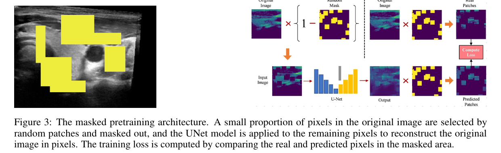
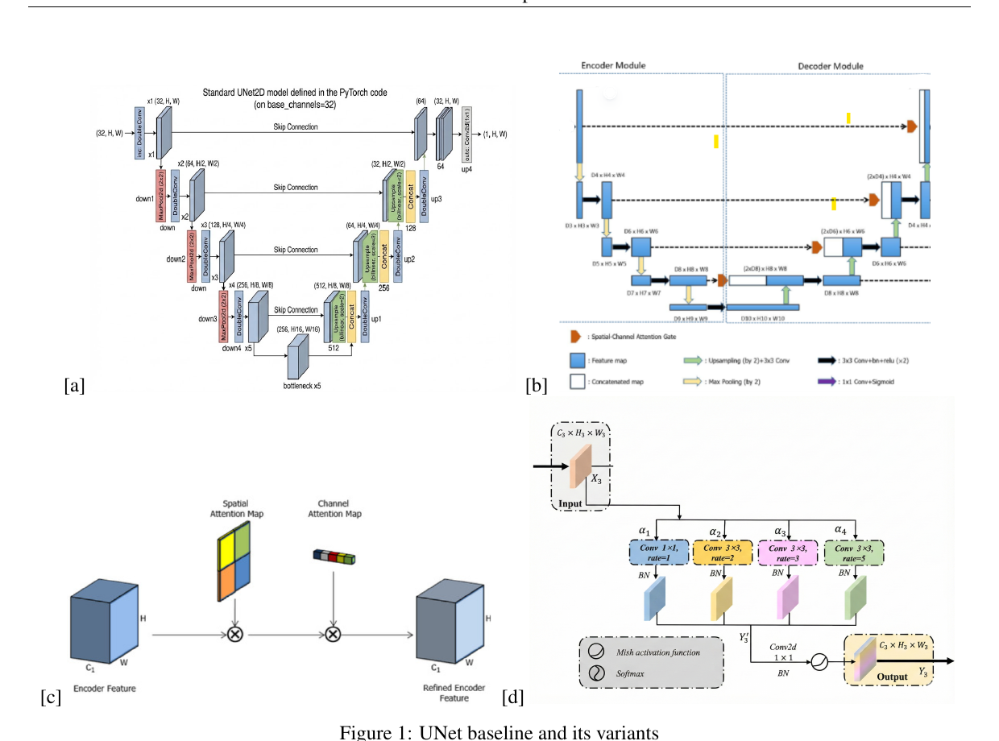
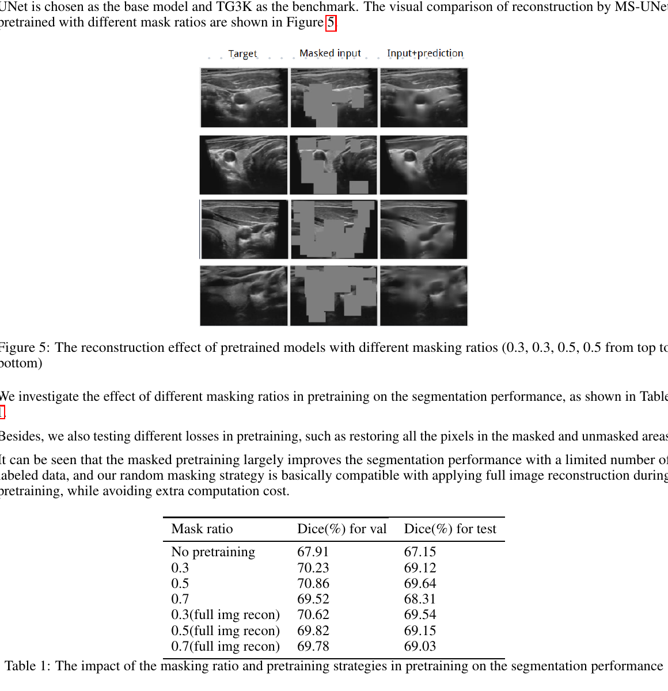
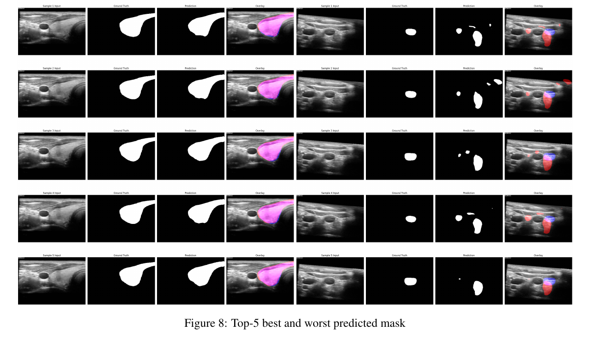
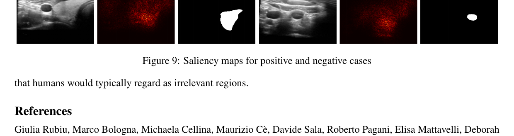

AI · Coursework paper · Deep learning
Masked Pretraining for Medical Image Segmentation
A U-Net-based framework that tests whether masked self-supervised pretraining can improve segmentation when pixel-wise medical annotations are limited.

Role
Model design · training scripts · evaluation
Category
AI · computer vision · medical imaging
Core methods
Masked pretraining · U-Net · Dice loss
Supervisor
Henrik Pedersen
Status
Course project · source available
01Overview
This project investigates whether U-Net can benefit from masked image pretraining when pixel-wise medical annotations are scarce. During pretraining, random regions of an image are hidden and the model reconstructs the missing pixels; the resulting weights are then reused for supervised segmentation.
The paper evaluates the method on TG3K thyroid ultrasound and STS-2D-Tooth panoramic dental X-rays. It compares a standard U-Net with spatial-channel attention and neighbour-aware context variants under limited-label conditions.
02Training workflow
The core comparison is between two self-supervised reconstruction strategies. Masked Image Modeling hides regions of an input and trains a U-Net backbone to recover them. Full-image pretraining instead reconstructs an original image from a perturbed version.
03Modeling choices
The paper compares a standard 2D U-Net with scAG-UNet, which refines skip connections using spatial-channel attention, and NAC-UNet, which adds neighbour-aware context at the bottleneck. Fine-tuning uses a combined binary cross-entropy and Dice objective to balance pixel-wise correctness with overlap quality.
- Self-supervised signals. Masked reconstruction and full-image reconstruction provide two ways to learn from unlabeled images.
- Segmentation objective. BCE + Dice loss gives the model both local pixel supervision and a region-overlap signal.
- Inspection tools. Qualitative plots compare input, ground truth, prediction, and overlay; saliency maps make model focus easier to inspect.

04Evaluation
The paper uses Dice similarity as its primary metric. On TG3K, masked pretraining with a 0.5 mask ratio improves test Dice from 67.15% without pretraining to 69.64%; scAG-UNet reaches 73.12% test Dice under the same comparison setup.


The repository also includes preprocessing utilities, checkpoint management, reproducibility helpers, and command-line entry points for each stage of the experiment.

05Reflection
This project connects a practical segmentation pipeline with a broader question in representation learning: when labels are expensive, how much useful structure can be learned from the images themselves?
The results are dataset-dependent. Masked pretraining helps more on the heterogeneous TG3K ultrasound images; on the smoother STS-Tooth images, the improvement is small and may not justify the extra computation. The paper also uses saliency maps to inspect whether failures coincide with attention to irrelevant regions.
